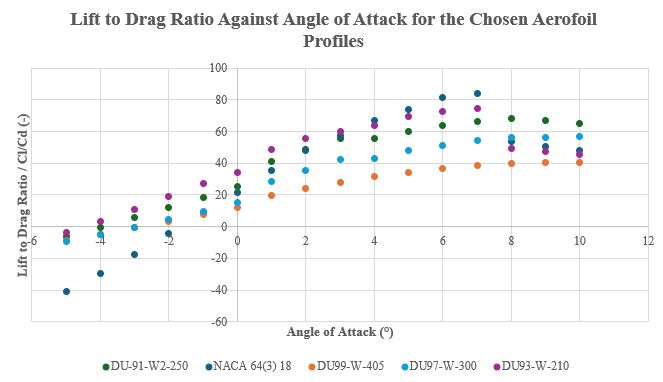
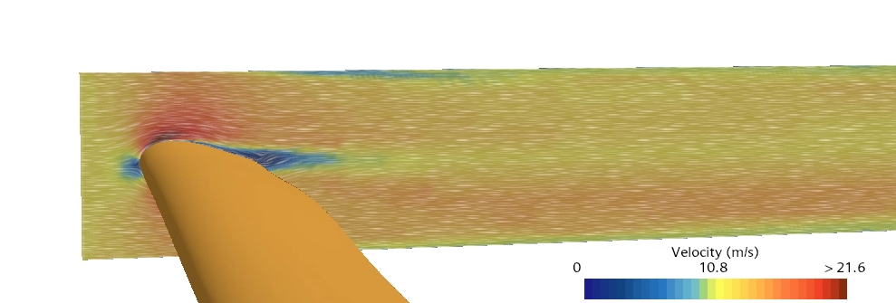
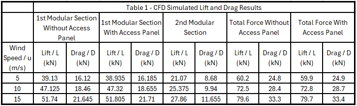
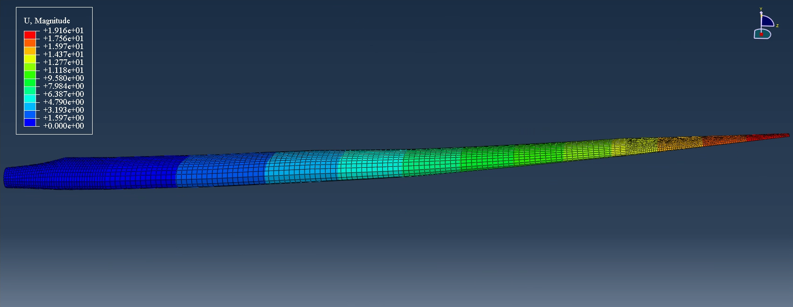

Enhancing the performance and sustainability of offshore wind turbines
August 2023 to April 2024
The chosen design solution was a modular approach which has the potential to reduce manufacturing and transportation costs as well minimising composite waste through the swapping out of degraded blade sections allowing composite wind turbine blades to reach their design life of 15 years rather than replacing an entire blade once tip has wared out after 5 years of use. My objective within the group was to develop and optimise the blade geometry for maximum aerodynamic efficiency whilst maintaining a structural integrity comparable to a standard one-piece blade.
Blade geometry based on CFD testing of the individual aerofoil profiles such as that shown below
Lift to drag ratio of the chosen aerofoil profiles. Analysis of this plot aided in determining the optimal angle of attack of each aerofoil profile relative to their position along the blade and the location of the split along the blade.

A modular spar was required as part of the design which included a overlaping intersection for efficient load transfer
CFD analysis of the design as a whole in Star-CCM
CFD lift and drag results

Edgewise testing mode in FEA analysis using Abaqus CAE
Flapwise testing mode in FEA analysis using Abaqus CAE